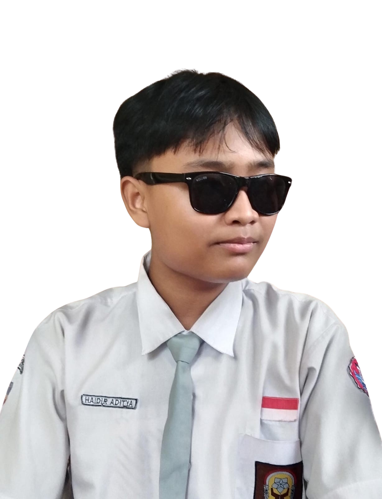
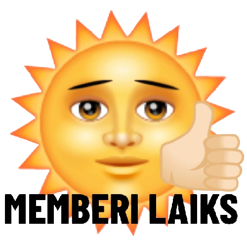

Keahlian
Nama saya Haidir Aditya, rata-rata project yang saya kerjakan adalah website statis, hampir sepenuhnya dirancang di sisi front-end.
Saya juga mampu menangani project website dinamis yang berintegrasi dengan database seperti MYSQL dan SQLite.
Kemampuan saya dalam mengelola website di kedua bidang front-end dan back-end sekaligus, menjadikan saya seorang Full-Stack Developer yang bisa diandalkan.

Projek
 tekan foto sekali lagi untuk menutupnya.
tekan foto sekali lagi untuk menutupnya.

Kontak
Ini adalah beberapa media sosial yang saya gunakan, selalu aktif menerima pesan dan panggilan setiap saat.